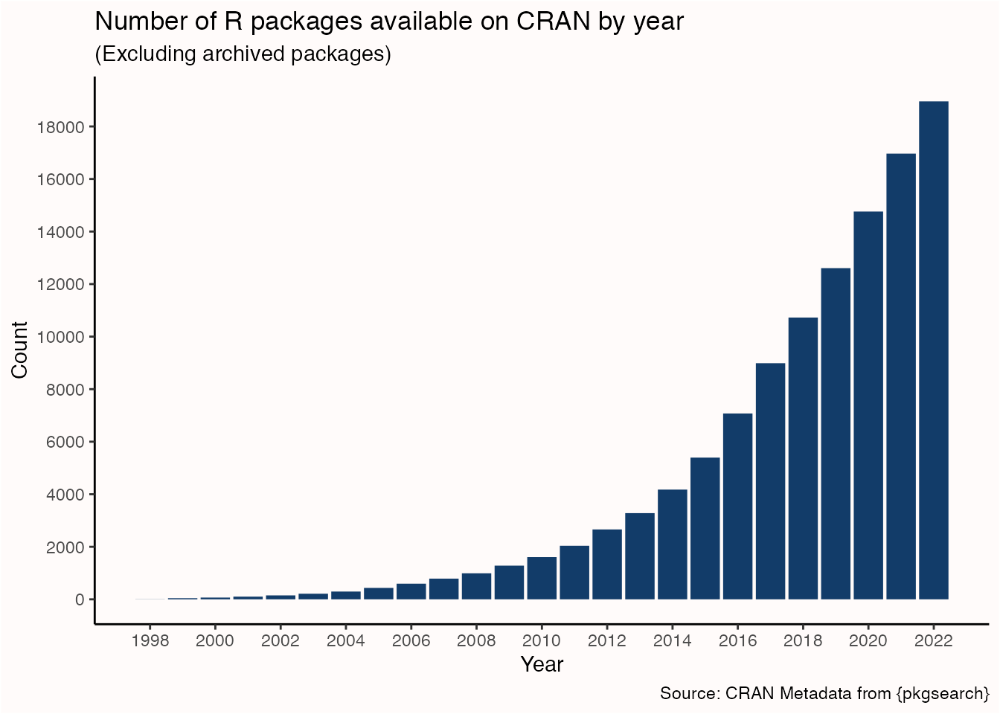
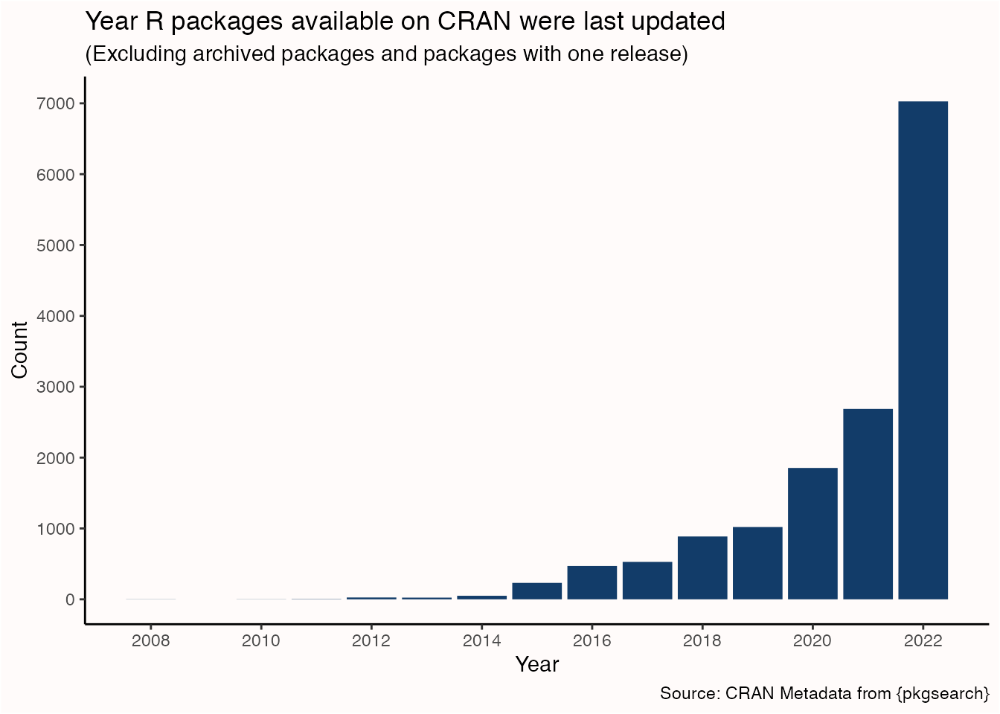

How do I install R packages?
The standard way to install R packages is with the install.packages() function that comes with base R.
install.packages("tibble")A fresh way to install R packages is with the pkg_install() function from the pak package.
pkg_install("tibble")pak is fast, safe, and convenient. You can learn more about it on the package website.
When installing a package, you will sometimes encounter the above question along with the message “There are binary versions available but the source versions are later”. What this question is asking is whether you would like to have your computer build (compile) the package binary from source code then install it (yes) or have your computer install a pre-built binary (no). If you choose yes, you will get the newest version of the package; if you choose no you will get the newest binary version of the package (typically the previous release).
Unless you need the newest version of the package for a specific feature or bug fix, I recommend choosing no—the binary version will install faster, and you can simply wait a few days for the binary of the newest version to be built on the repository you’re installing packages from, then install the package again to get the newest version. If you need the newest version of the package right now then choose yes, but you will need to set up your R build toolchain first.
To learn more about package installation, see the Package structure and state chapter in R Packages by Hadley Wickham and Jenny Bryan.
Where can I install R packages from?
Release versions of R packages can be installed from:
Development versions of R packages can be installed from:
Previous release versions of R packages can be installed from:
- Posit Public Package Manager
MRAN(shut down on July 1st, 2023)
Where can I find new R packages?
There were 18954 R packages available on CRAN in 2022, and that number only continues to grow over time. That’s not to mention the 2165 R packages available on Bioconductor, the 1704 packages available on R-universe but not CRAN or Bioconductor, and the unknown amount of packages only available on GitHub.

Fortunately, there are many places to find curated content about R packages:
- Your favourite search engine
- CRAN Task Views
- R Views
- The Posit Blog
- Posit Videos
- tidyverse blog
- Trending on GitHub
- pkgsearch
Your favourite search engine is often a good starting place. Include r and package in your search, plus the topic you’re interested in, and you’ll usually find something helpful. Use boolean operators to narrow down your search or to hide unrelated things like Reddit (-site:reddit.com).
CRAN Task Views provide guidance on which R packages are relevant for tasks related to a certain topic. The task views are not meant to endorse the “best” packages for a given task; rather, they take an encyclopedic approach that serves as a good reference.
R Views is an R community blog edited by Posit where you can learn about new R packages and see how to use them (plus some other goodies).
The Posit Blog is where you can get news and updates about R packages made by Posit. The blog is about “all things data science and the world that benefits from [Posit] products, community, and events”, so it has a wider scope than R packages alone; but it’s a good place to follow anyways to stay up to date with what’s happening in the R world.
On a similar note, you can find videos from events hosted by Posit, such as conference talks, data science hang outs, tutorials, and more at Posit Videos (and the Posit YouTube channel). This is a good place to see what R packages the community is using, and how they use them.
The tidyverse blog is where you can get news and updates about R packages in the tidyverse.
Finally, if you don’t want to leave the comfort of your IDE, the pkgsearch package is a package you can use to find other packages..!
Word of mouth on social media is a great way to find new packages or learn about new ways to use your favourite packages. Follow your favourite developers to keep up to date with their work, and check out the #RStats and #TidyTuesday hashtags to see what the community is up to.
How do I attach R packages?
The standard way to attach R packages is with the library() function that comes with base R.
library(tibble)If you want to attach multiple packages in a single function call, use the pkg_attach() function from the xfun package.
pkg_attach("tibble", "dplyr")How do I manage namespace conflicts?
Sometimes R packages will use the same name for different functions. A common example is dplyr::select() and MASS::select(). Under R’s default conflict resolution system, if both of these packages are loaded in the same session select() will come from the most recently loaded package.
If you want select() to refer to dplyr::select(), base R provides the following solutions:
- Load MASS first and dplyr second
- Exclude
select()when loading MASS:library(MASS, exclude = "select") - Always namespace dplyr’s
select()function:dplyr::select()
An alternative approach to managing namespace conflicts is with the conflicted package, which makes every conflict an error and forces you to choose which function to use. You can learn more about it on the package website.
How do I update R packages?
Most R packages available on CRAN are actively maintained and updated. For example, in 2022 more than half the packages available on CRAN had an update in the same or previous year. It’s good practice to keep up with these updates so you can get the latest features, improvements, and bug fixes.

Use old.packages() to check which of the packages you’ve installed have updates available from the repositories listed in getOption("repos").
old.packages()Update specific packages to the most recent version by re-installing them with install.packages() or pak::pkg_install().
# The standard way to update a package
install.packages("tibble")
# A fresh way to update a package
pak::pkg_install("tibble")Update all the packages listed by old.packages() at once with update.packages()1 or pak::pkg_install(old.packages()[,"Package"]). Note that update.packages() uses install.packages() under the hood, so it won’t be as fast as pak.
# The standard way to update all packages at once
update.packages()
# A fresh way to update all packages at once
pak::pkg_install(old.packages()[,"Package"])You can also install and update packages using RStudio, either from the Packages pane or from the menu bar Tools > Check for Package Updates.
Sometimes package updates will include breaking changes, which are named as such because they are expected to break code using older versions of the package. Most package updates won’t contain breaking changes, but occasionally they will. This should not discourage you from updating packages, but it should encourage you to update thoughtfully—don’t do your updates before important deadlines!
I recommend creating multiple user libraries with rig that can be used for different tasks. This way different libraries can be updated more or less frequently, and it’s easier to make the choice whether or not to update. For example, you could have a devel library for package development that is updated weekly, a general main library that is updated monthly or yearly, and so forth. Another good practice—especially for long-running projects—is to create project-specific libraries with renv. The project libraries created by renv are isolated from your user libraries, so you can continue to update your user libraries as normal without worrying about breaking changes affecting the projects using renv.
How do I restore my current library into a new library?
A new library is created whenever you install a new major or minor version of R (the “x” or “y” in version “x.y.z”), so all your favourite packages need to be re-installed to this new library if you want to use them. This is also true if you create a new library in the current version of R (e.g., with rig library add).
The approach shown below can also be used to transfer a library from one computer to another. All you need to do is:
- Follow the steps to create the character vector of packages in your current library (
pkgs) - Save the
pkgsR object with:saveRDS(pkgs, file = "pkgs.rds") - Copy the
pkgs.rdsfile to the other computer* - Load the
pkgsR object with:pkgs <- readRDS(“path/to/pkgs.rds”) - Install pak on the other computer with:
install.packages("pak") - Install the packages with:
pkg_install(pkgs)
*For added convenience, store pkgs.rds in a GitHub repository so you can access it wherever you go!
If you are using rig (and you should be), restoring your current library into a new library is easy with some help from pak and dplyr.
First—in your current library—get the path to your user library. Copy this down somewhere.
.libPaths()[1]You can now switch to your new library. The easiest way to switch on macOS is with the menu bar app; otherwise use the shell prompt. Open a new RStudio window to start a session with the new library.2
# Switch to a different R version
rig default <version>
# Switch to a different library
rig library default <lib-name>In your new library, install and attach pak and dplyr.
# install.packages(c("pak", "dplyr"))
library(pak)
library(dplyr)Use pak::pkg_list() to get a data frame containing data about the packages installed in your current library.
pkgs_tbl <- pkg_list(lib = "path/to/your/user/library")Wrangle this data down into a character vector specifying the package source and package, following the package reference syntax used by pak.
pkgs <- pkgs_tbl |>
select(package, remoteusername, repotype) |>
mutate(pkg = case_when(
# GitHub
!is.na(remoteusername) ~ paste0(remoteusername, "/", package),
# CRAN and Bioconductor
repotype %in% c("cran", "bioc") ~ paste0(repotype, "::", package),
# Default to the `standard` package source
TRUE ~ paste0("standard::", package)
)) |>
pull(pkg)Then install all your packages.
pkg_install(pkgs)If you have previously set R_LIBS_USER in your .Renviron to change the default library path, you may need to remove this variable or change its path if there are issues locating your various user libraries. A quick way to open .Renviron is with usethis::edit_r_environ().